SEM / contact angle / roll off and wear testing / my Master’s project
↗
Battery ageing model
LFP cells / lifetime modelling / Python
A PFAS free water repellent coating in collaboration with Finisterre
My Master's project, supervised by Prospero Taroni-Junior and run with Abbie Spence at Finisterre. I made a PFAS free water repellent coating for outdoor fabric and tested it against the finish they already use.
a droplet going onto a coated sample in the goniometer
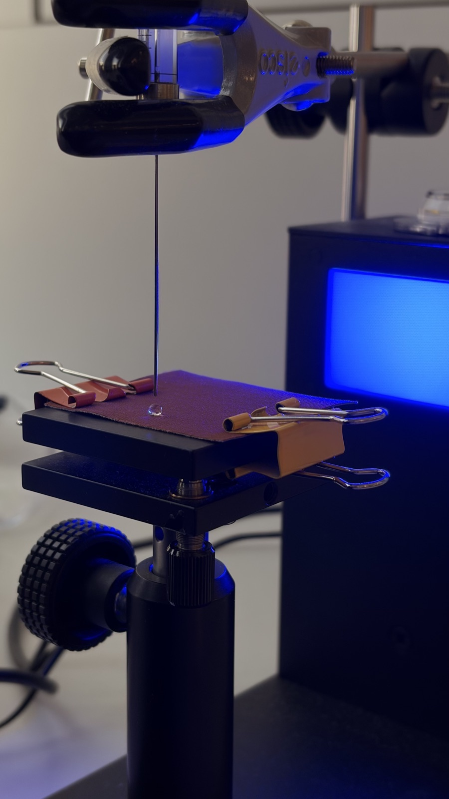
the rig itself · a droplet going down onto a coated sample
Every sample is measured the same way. A droplet goes onto the fabric from the needle, the backlight shows its outline, and the contact angle is read from that outline. A higher angle means the surface repels water more.
PFAS are the fluorine chemicals used in most water repellent outdoor gear, and they're linked to harm to people and the environment. The hard part is making a fluorine free finish that still beads water after it's been washed and worn.
Finisterre already make their kit with PFAS free chemistry, so their own finish on their own fabric was the benchmark. My coating went onto cotton, and onto the same Finisterre fabric supplied without a finish.
Unmodified TiO₂, sitting in clumps on the fibresSurface modified TiO₂, in finer clusters across the fibres
SEM at ×2,000 · modifying the particle surface broke up the clumps, but it did not make the coating repel or shed water any better
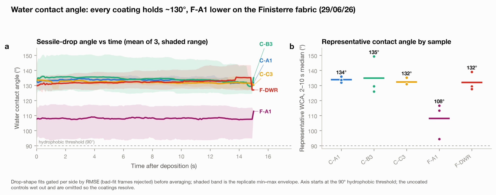
static contact angle before wear · 132 to 135° for my coatings on cotton and 132° for the commercial finish on Finisterre’s fabric, while uncoated cotton wets out at 38.8°
I measured roll off as well as contact angle, then tested the samples through 200 sandpaper abrasion cycles and 20 lab wash cycles. Only C-C3 on cotton ended washing near its starting roll off angle. On the same Finisterre fabric, my emulsion and the commercial finish both ended near 80°, so I can't claim mine lasts better through washing. High contact angles also didn't stop small drops from pinning.
Battery ageing model Huawei Tech Arena 2026, Digital Power
A grid storage battery loses capacity slowly for years, then the loss suddenly speeds up and the pack reaches end of life soon after. The competition asked for the whole curve, down through that knee to 70% state of health, at temperatures and charge rates the model hadn't seen, using only the temperature and the C rate. There were no sensor traces, because the cells being scored didn't have any.
The organisers' baseline fades as n to the power 0.8. That exponent is below one, so the fade rate falls as the cell ages, and a knee is the opposite: fade that accelerates. The baseline couldn't represent what the task was asking for, so I modelled the fade and the knee separately and let the knee fit to zero where a cell didn't have one.
Two things mattered most. The knee doesn't follow the Arrhenius law the fade does, and the dominant ageing mechanism in these cells changes somewhere around 35 to 45°C, so one temperature law couldn't cover both. None of the open datasets carried the condition dependence the six unseen operating points needed, so it had to come from the target data, with the open data used only as a prior on curve shape.
The organisers keep their scoring metric hidden, so designing the validation was part of the task. Six cells were released, one per operating condition. Each fold held one whole condition out and trained on the other five, since part of the hidden scoring is at conditions with no released data. Against the baseline at 1.000, lower being better, the mean over the six folds was 0.711, and the error at the 70% end of life point fell from 64% to 36%.
Six folds make that number loose. Dropping any one condition moves the mean anywhere from 0.44 to 0.99, and most of the remaining error sits at the hottest condition, 55°C at 1C, where the model has to extrapolate in temperature. These are held out results on the released cells, not the organisers’ leaderboard score.
made with
Python / NumPy / SciPy / pytest / Make
02 · Current research
At Curtin in Perth until November 2026. There are no results yet.
↗
How fast a silicate takes up CO₂
solid state synthesis / XRD / Curtin University, Perth
How fast a silicate takes up CO₂ visiting research associate, Curtin University
I’m at Curtin in Perth until November 2026, on the reaction that lets silicate minerals lock carbon away. Silicates weather naturally and take up CO₂ as they go, but slowly, and for the one I’m working on nobody has measured how slowly. That is the project: the rate, and whether the process would scale.
First I make strontium orthosilicate (Sr₂SiO₄) by solid state reaction. Strontium carbonate and silica are weighed out, ball milled together under acetone, dried, then fired in a furnace. XRD says whether the phase I wanted is the phase I got.
Then I carbonate it. The powder goes into water with CO₂ bubbled through, and samples come out at set times to be filtered, rinsed and dried. Full carbonation adds 0.329 g of CO₂ per gram of Sr₂SiO₄, so the mass gain measures how far the reaction has gone, with XRD confirming the strontium carbonate and a water only run alongside as the control. Designing that experiment is part of the work, since there is no method to copy.
It is a model system rather than carbon removal in itself. Making Sr₂SiO₄ from strontium carbonate releases the same CO₂ the carbonation later takes back, so the value is in the rate and in what it says about doing this at the scale of a mine site.
There's nothing to report yet.
03 · Engineering and prototyping
↗
Solar racing boat
CAD / fabrication / raced in the Netherlands
↗
A £50 hydroturbine
design to field test / renewable energy
↗
The balsa bridge
team project / spotted the flaw before test day
↗
Maze solving robot
electronics / control logic / Arduino
↗
Brocklebikes
495+ repairs / self taught / customer facing
Solar racing boat designed, machined, raced
A university team project to design, machine and race a solar powered boat. I worked on the CAD and the fabrication in the workshop, and we raced the finished boat in the Netherlands. We didn't win, but it went from a drawing to a boat in the water in eight months.
A £50 hydroturbine tested in a stream
A hydroturbine designed and built for about £50, then tested in a stream. It made enough power to light a bulb.
The balsa bridge the only one to hold under full load
A team project to build a bridge from balsa wood. We spotted the flaw in our design before test day and fixed it. On test day it carried a large radio controlled car, and ours was the only bridge in the group that held.
Maze solving robot sensors and soldering
An Arduino robot that finds its own way through a maze, using ultrasonic sensors, control logic and a lot of soldering. We designed a 3D printed shell for it, and it solved the maze on its own.
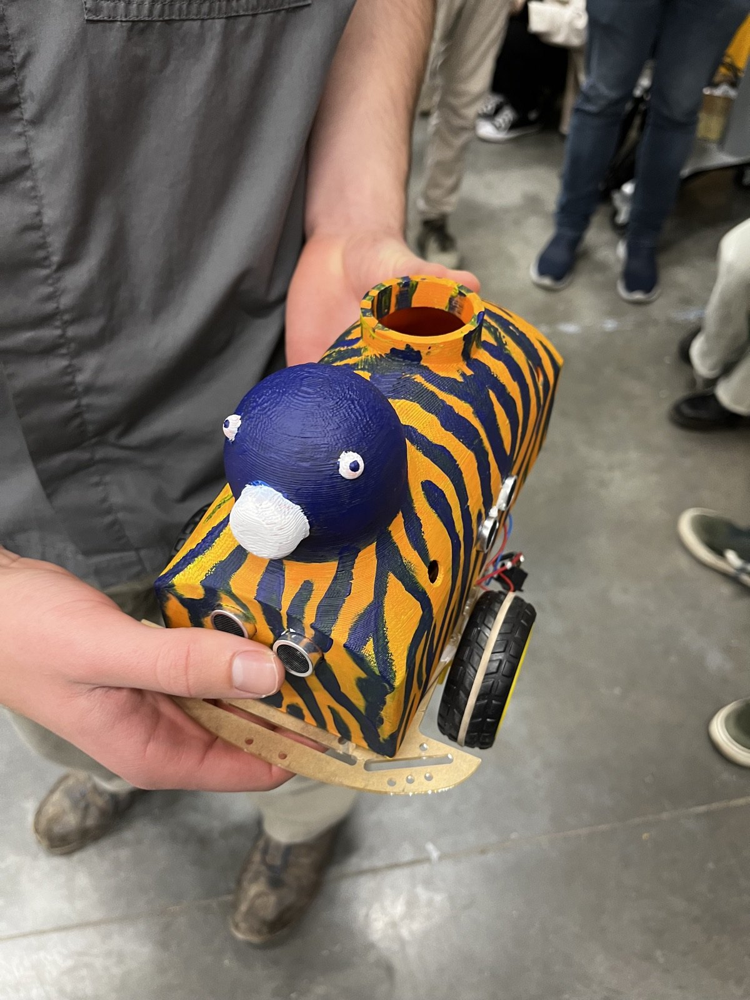
the shell, painted in tiger stripes, with a face a bit like a duck
Brocklebikes a business I started at sixteen
I started a bike repair business at sixteen and taught myself as I went. I've fixed more than 495 bikes.
04 · Education
An MSc in Advanced Materials Science at UCL, after a BEng in Renewable Energy Engineering at Exeter, where I got firsts for my dissertation and the field trip module.
MSc Advanced Materials Science University College London
London · research year
Where I did the PFAS free coating project. Most of it was synthesis in the lab and a lot of hours on SEM, TEM, FTIR, XRD and XPS.
09/2025 – 09/2026
BEng Renewable Energy Engineering University of Exeter, 2:1
Exeter · mechanical and electrical engineering
My dissertation on redox flow batteries for renewable energy earned a first, and so did the field trip module, where I pitched wind turbine blade recycling to industry partners Nadara and ReBlade. I also turned a day hiking a mountain near Oban into a vlog, filmed and edited on the trip.
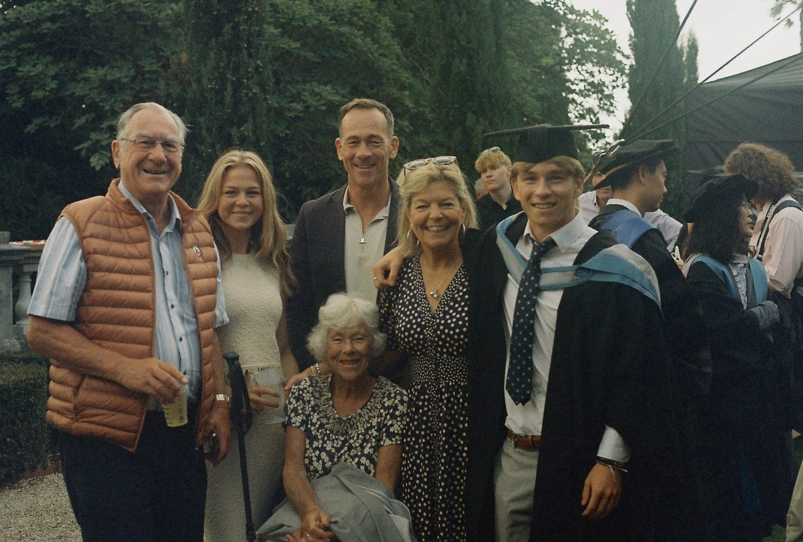
graduation day at Exeter
09/2022 – 07/2025
↗
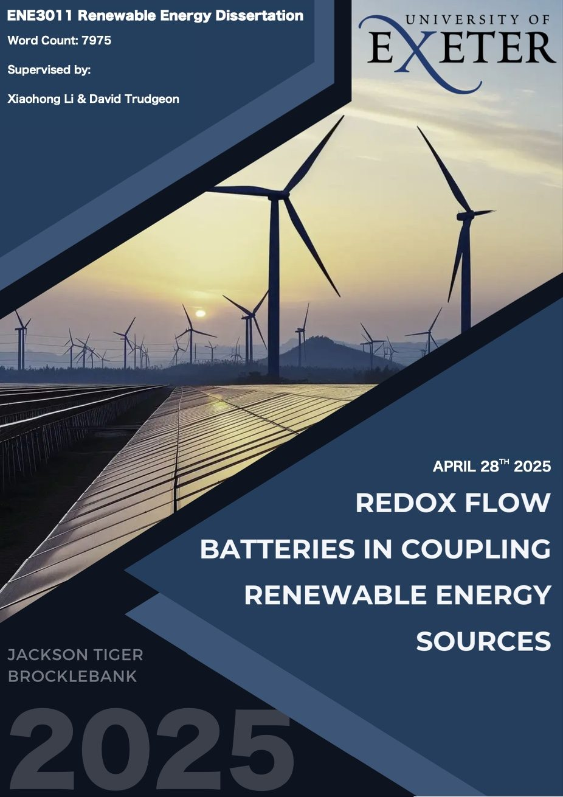
Redox flow batteries
energy storage / expert interviews / University of Exeter
Redox flow batteries BEng dissertation, awarded a first
My BEng dissertation at Exeter, supervised by Xiaohong Li and David Trudgeon. Wind and solar generate when the weather allows, so the grid needs storage that can hold several hours and give it back slowly. Flow batteries keep the energy in external electrolyte tanks and the power in a separate stack, so the two can be sized independently.
I compared five chemistries: zinc bromine, iron chromium, metal air, lithium based and vanadium. Vanadium came out ahead for grid scale. All four of its oxidation states dissolve in the same acid, so electrolyte crossing between the half cells only self discharges instead of contaminating them, and a stack takes 10,000 to 20,000 deep cycles before the capacity noticeably fades. The electrolyte is water based, so there is no thermal runaway to design around.
I also ran my own interviews. Seven invitations went out to people working on vanadium flow batteries in industry and research, four agreed, and three recordings survived a fault that lost the fourth. Twelve questions each, twenty to forty minutes, transcribed and then corrected by hand.
They agreed on the barriers. Perfluorinated membranes such as Nafion are expensive, pumps and power electronics pull real round trip efficiency down to about 75%, and market rules reward fast response rather than the eight hour discharge vanadium is suited to. The Energy Superhub Oxford case study showed the pairing that gets used in practice: the vanadium system absorbs the daily deep cycling so the lithium pack next to it can take the short high power calls and last longer.
None of those are scientific problems. Vanadium already meets the technical requirements for pairing with wind and solar, and what's left is cost and regulation.
05 · Work outside the lab
Alongside university I've worked in library IT support, cafés and a lettings office, been a student rep and started a running club.
Run Club Founder & President Falmouth Running Society
Routes, sessions and socials
I started the club and led it, reaching 200+ followers and up to 25 runners a week within a semester.
01/2024 – 06/2024
Digital Hub Student Ambassador University of Exeter
Technical support, up to 100 students a day
Helping students with IT problems in the library.
09/2024 – 06/2025
Student Representative University College London
Course feedback
I collect feedback from students on the course and take it to department meetings.
09/2025 – present
Customer Facing Roles cafés and a lettings office
Drury 188-189 · Castle Beach Café · Frank Harris & Co
Two café jobs and a sales and lettings office, taking orders, answering enquiries and doing day to day admin.
2023 – present
06 · Software and programmed experience
Characterisation instruments, workshop machines and the software I edit and model in.
creative & contentPremiere Pro · Photoshop · DaVinci Resolve · Sony Vegas · CapCut · iPhone shooting
Research, planning and the repetitive jobs I would rather not do twice.
↗
Pocket Claude
Ubuntu VPS / tmux / Tailscale / iOS Shortcuts
↗
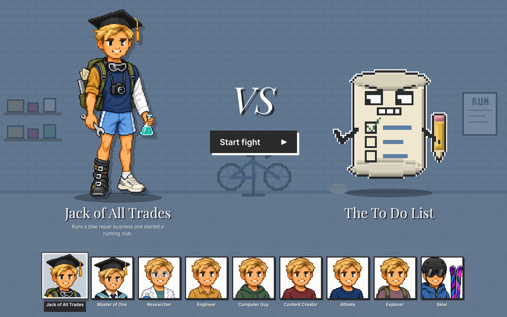
This website
design system / GitHub Pages / no frameworks
Pocket Claude a small infrastructure project, july 2026
I set up a small cloud server that runs a coding agent around the clock. My laptop, my phone's terminal and a voice shortcut all attach to the same live session, so work carries on wherever I am.
Laptop
A full terminal at my desk, attached to the running session.
ssh → tmux
Phone terminal
Termius on my iPhone, attached to the same session.
ssh → tmux
Voice
Press a button and speak. An iOS Shortcut types my words into the live session.
dictate → ssh
encrypted · no public ports
Private mesh network
Tailscale links every device over WireGuard, so access is by identity rather than by opening the server to the internet.
Cloud server
ubuntu · london · hardened
tmux · a persistent session that survives every disconnect
Claude Codealways running
a systemd service brings the session back automatically after any reboot
Live file sync
mutagen · two way · about a second · over ssh
on my macthe working folder
⇄
on the serverthe same folder
the voice shortcut on my phone, a test phrase spoken in the streetthe same words landing in the live session, agent replying, next job queued
hardenedNon root user, firewall and unattended security updates. No passwords, keys and network identity only.
persistentWork carries on with every device closed. Any client reattaches to the exact same live state.
low upkeepAbout six pounds a month, patches itself, and needs almost no attention once running.
made with
Ubuntu VPS / tmux / Tailscale / WireGuard / Mutagen / systemd / iOS Shortcuts
This website made with Claude Code
This site was planned, designed and made with Claude Code.
I use Claude Code with MCP connectors and a handful of skills I've added, run in Ghostty so I can keep a few sessions going at once and hand jobs off to separate agents. It helps with content research and ideas, with turning a rough idea into something I can test quickly, and with the dull jobs like logging, tracking and reporting.
07 · Outside work
On skis since I was three
Piste and freeride, usually with a camera running. All the clips below are mine.
Different resorts and conditions, filmed as I go.
Sport & outdoors
Running, climbing, surfing and skating, most weeks of the year.
↗
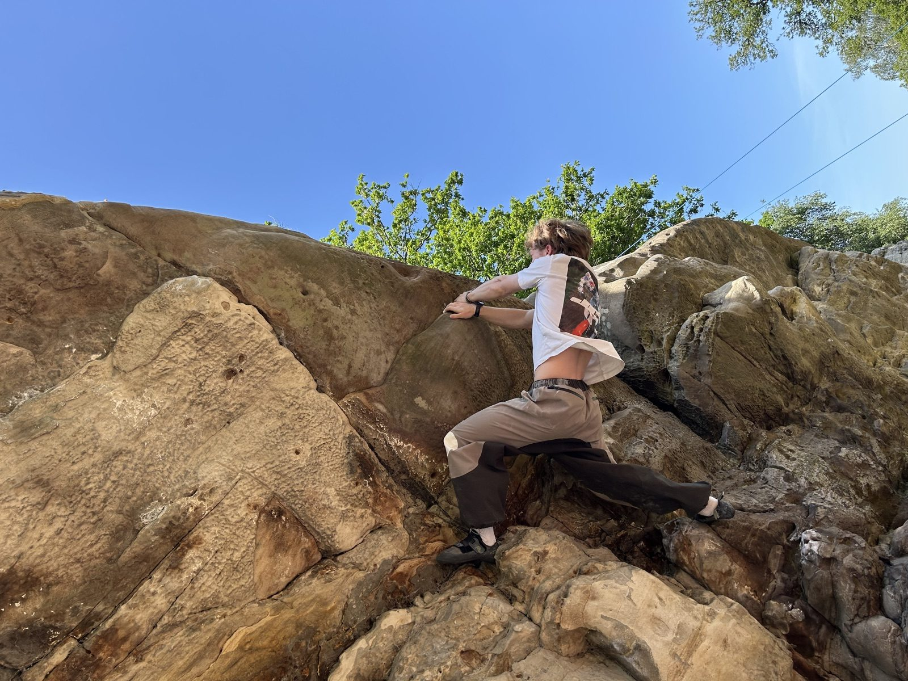
Climbing
bouldering / indoors and out
↗
London Marathon 2026
64 donors / run for charity
↗
Surf & skate
photography / most of it shot myself
Climbing on rock when I can
Mostly bouldering, indoors during the week and outside on real rock when the weather is good and friends are free.
London Marathon 2026 £1,647 raised for Marie Curie
For the 2026 London Marathon I ran for Marie Curie and raised £1,647 from 64 donors, two thirds of the target, with a crowd of mates holding a "GO TIGGY" sign at the finish.
Surf & skate and everything else
I also surf, skate, learn Japanese, play piano, guitar and chess, and build my own PCs. I took most of these photos myself.
Travel & adventures
Senegal, the Dolomites and New York, mostly shot on film.
↗
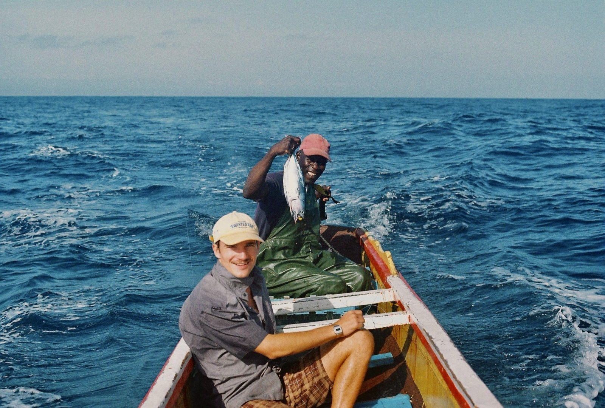
Senegal
surf camp / pirogue fishing / shot on film
↗
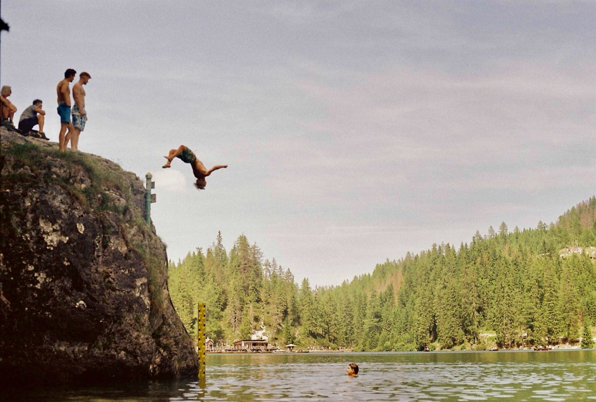
The Dolomites
sunrise hikes / alpine lakes / italy
↗
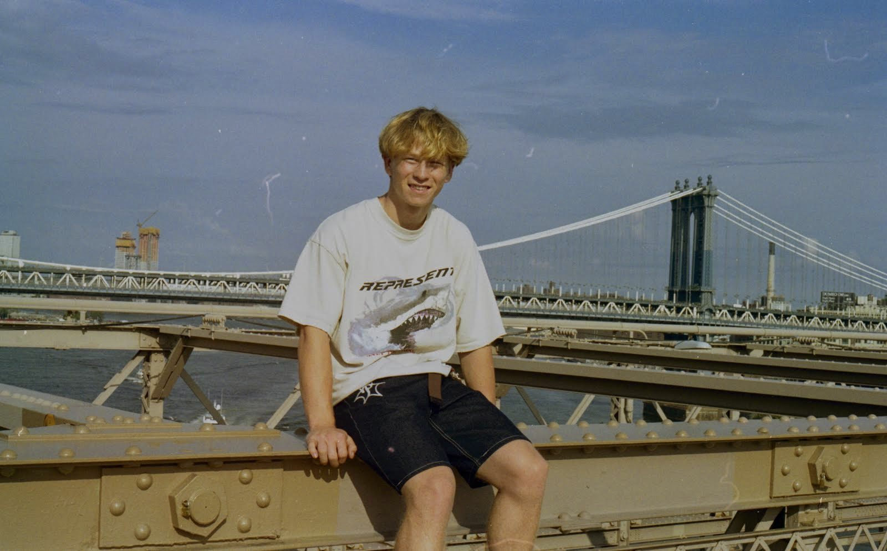
New York
brooklyn bridge / film camera
Senegal keeping a surf camp running
I spent a while in Senegal helping run a surf camp while the owner was away, looking after guests, boards and whatever else came up. Outside of that I went out on a pirogue with the local fishermen, carried the catch back along the beach and met a giraffe. I shot most of it on film.
out with the fishermen, handlines off a pirogue
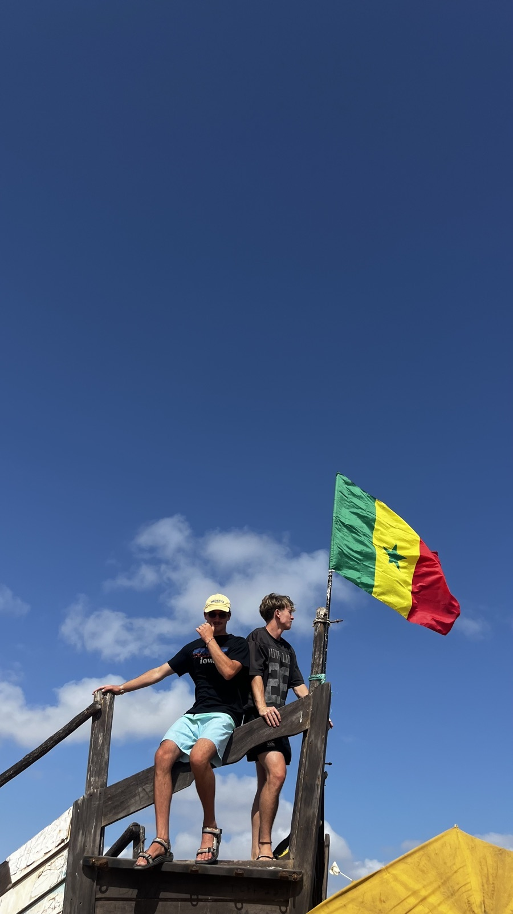
the lookout above the camp
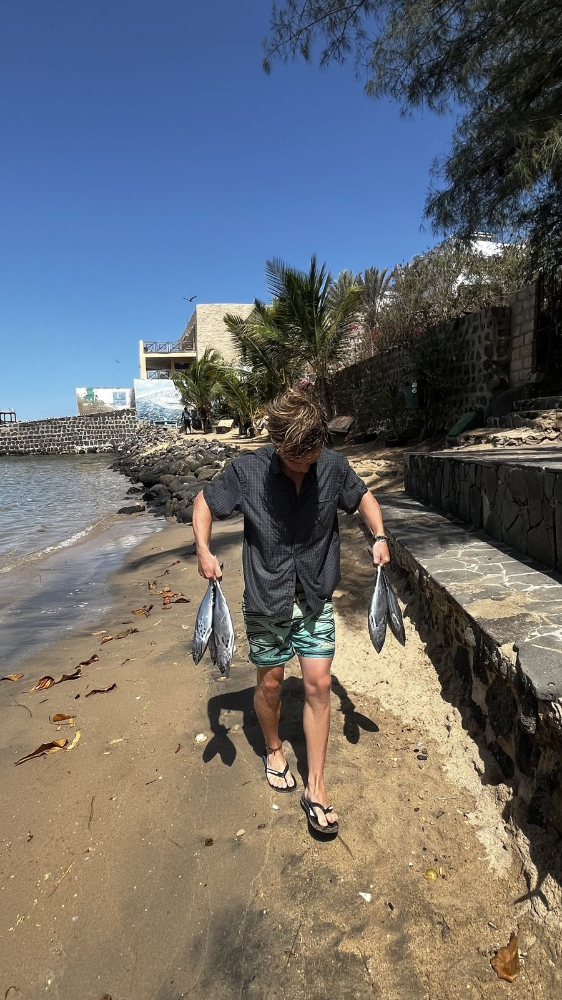
carrying the catch back for the kitchen
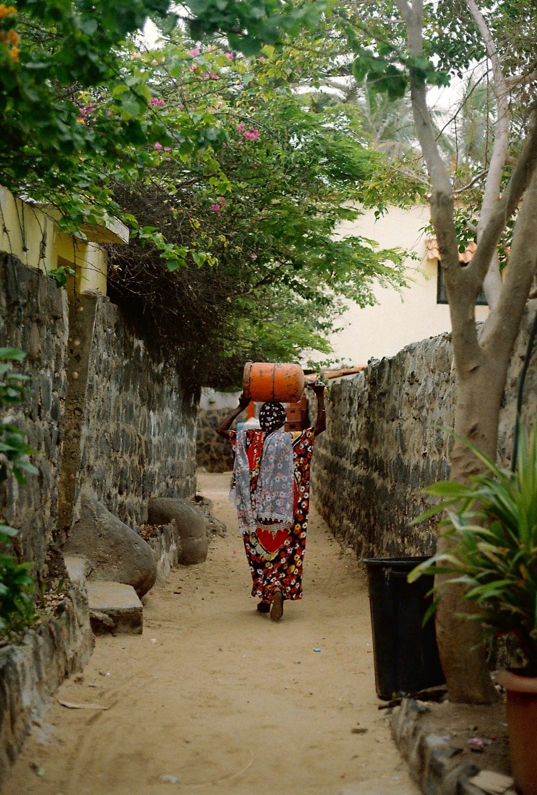
the lane down to the water
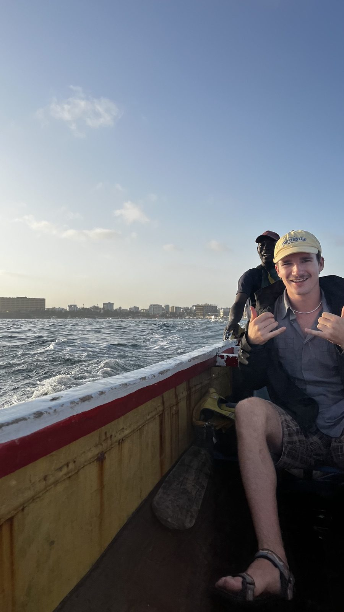
heading back in at the end of the day
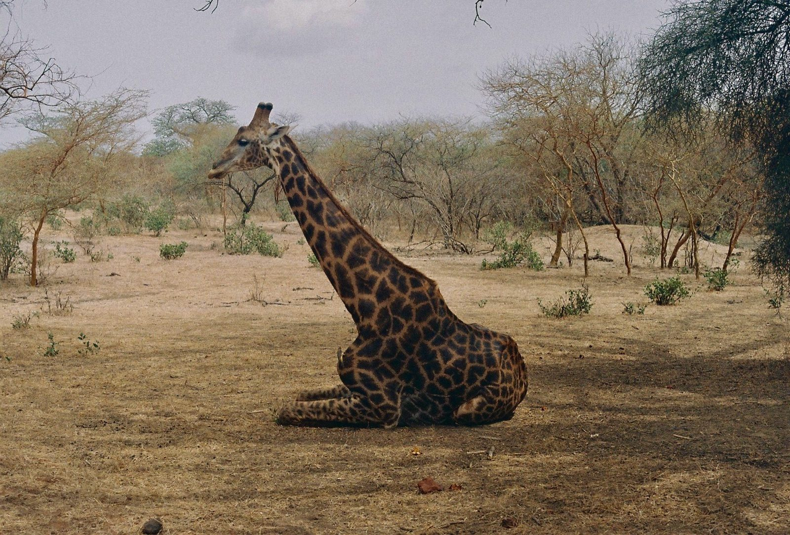
a giraffe
The Dolomites camping in the mountains
A few days camping in the Italian Dolomites, with an early start for a sunrise hike and a backflip into a freezing alpine lake.
the lake, mid backflip
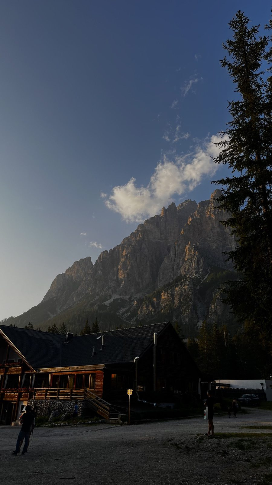
the campsite, under the wall
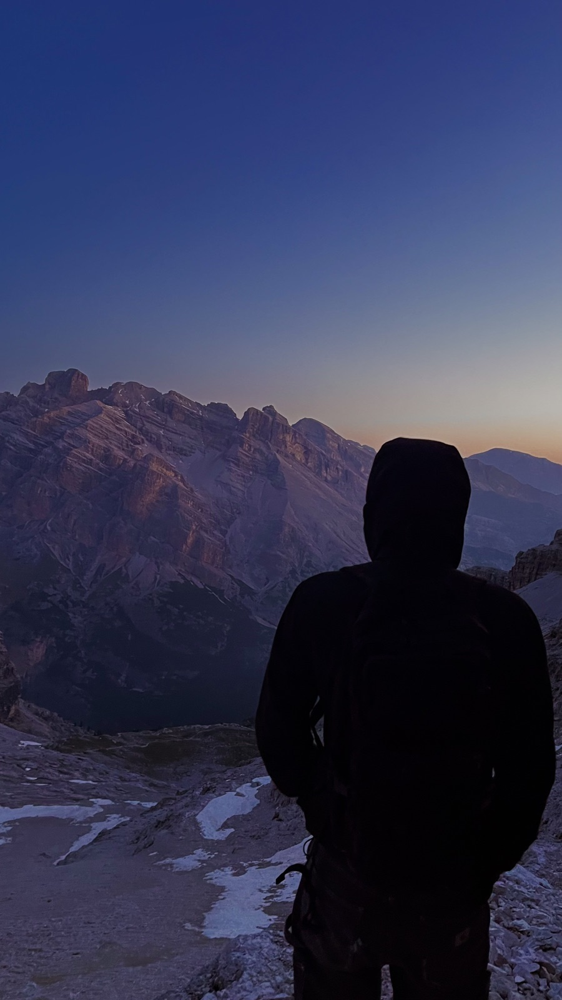
first light on the sunrise hike
New York a solo trip
A trip to New York on my own. This is on the Brooklyn Bridge with the Manhattan Bridge behind, shot on film.
Audiences and communities
A TikTok account, a university running club and a Twitch channel, which I started myself.
↗
@jacksontigerb
2.5m likes / one video at 1.2m views / run solo
↗
Film & editing
scooter edits / gaming videos / a Twitch channel
↗
Falmouth Running Society
community / weekly sessions / 200+ followers
@jacksontigerb 89,000 followers in seven months
I started @jacksontigerb in 2024, posting about learning Japanese, skiing and whatever else I was doing. I posted daily, read the analytics, kept what worked and dropped what didn't, and it grew quickly.
89kfollowers in ~7 months
80.9kfollowers now, after I stopped posting
millionsof views across the account
One video, 1.2 million views 5,600 followers from it alone
1.2m views / 3,956 hours watched / 61% retention
Other videos plenty over 100k views
1.1m / 659k / 269k / 169k / 128k
80.9k followers, 2.5m likes where it's at now
@jacksontigerb / july 2026
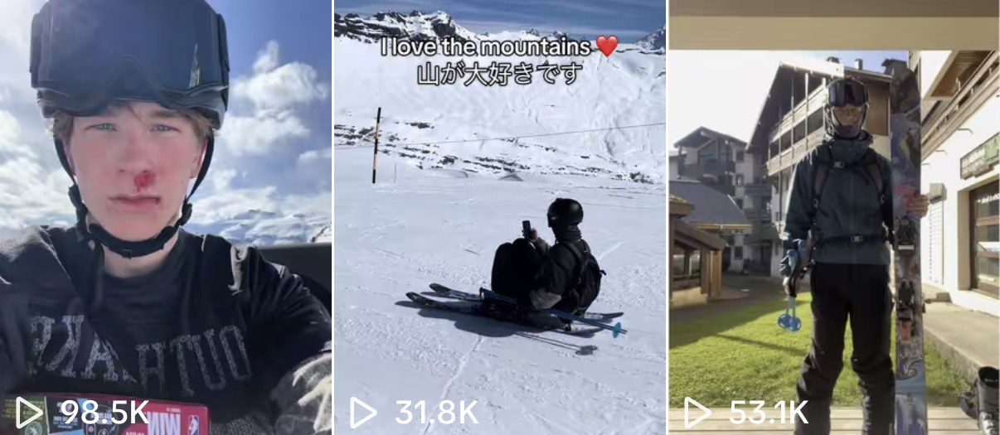
three of the skiing videos, at 98.5k, 31.8k and 53.1k plays
how it ran
I did all of it myself: ideas, filming, editing, captions, posting, replying to comments and reading the analytics. I stopped posting when I started my Masters in London, and it's dropped from 89k to 80.9k since.
Film & editing fifteen years behind a camera
Before the TikTok there were scooter edits, gaming videos and a Twitch channel, going back years.
Scooter & trampoline edits where it began
the 2017 edit / sony vegas / photoshop
Twitch & YouTube the streaming years
1.3k on Twitch, live and unscripted, plus years of gaming edits on YouTube in Premiere and Vegas
tools I use
Premiere Pro / Photoshop / DaVinci Resolve / Sony Vegas / CapCut / Adobe Creative Cloud
Falmouth Running Society founded in January, 25 a week by June
I started the society in January 2024, set the routes, ran the socials and led the sessions myself. By June it was 25 runners a week.
07 · let's talk
Get in touch.
I'm at Curtin University in Perth until November 2026, working on how fast a silicate mineral takes up CO₂. After that I'm doing a ski season in Hakuba. I'm looking for work in London from May 2027.